2026 2
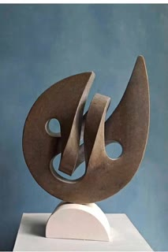
►DZCdm28Dhxf
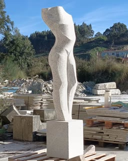
#esculturaenpiedra #escultura #granito #esculturagalega
2025 30
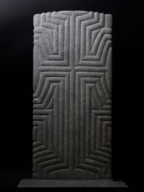
‘Time lines’ 2025, Kilkenny limestone. 65x 30x 4cm. This new sculpture is the coming together of many threads. Much of my public art work ov
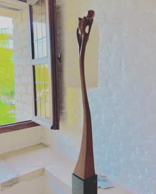
- Proud - #marble #carrara #artists #art #bronze #sculptor #tuinbeelden #follow4follow #marmer #brons #bronzenbeelden #beeldhouwer #animalar
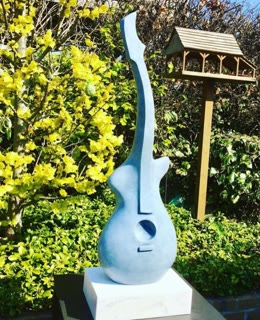
- Let’s rock - #marble #carrara #artists #art #bronze #sculptor #tuinbeelden #follow4follow #marmer #brons #bronzenbeelden #beeldhouwer #an
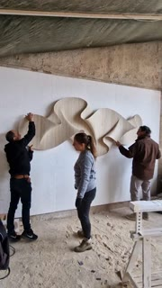
►I have just received an extremely positive reaction from the collector after mounting this piece on its new wall. Here, in this video, it is
►
EL LENGUAJE DE LA TIERRA Cuando mi voz se apagó, la tierra me ofreció otro lenguaje. Grabó en mi cuerpo un mapa de signos, para que el sile
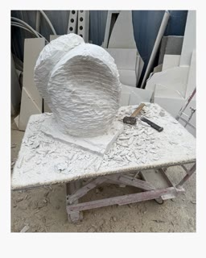
‘Trusting the Unseen’ New substack post available - please subscribe with link in bio 💛
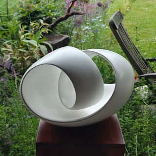
'Turning inside' I love the light and the shadow. #turninginside #lightandshadow #lightanddark #lessismore #artwork #sculptureart #keepontur
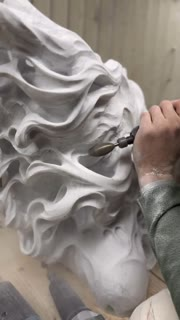
►Pennellare la pietra #riccardogatti #sculpture #sculpt #sculpting #sculptor #onyx #artsagram #atelier #Handmade #carraramarble #marmodicarr
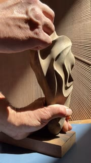
►Brontes #woodsculpture #englishwalnut #modernism #artnouveau #nativeart #artvancouver #abstractart #cyclopes
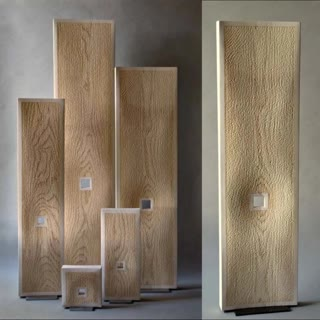
15 years ago... #sculpture #benoitaverly
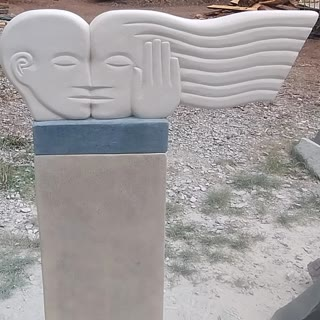
'Kiss' Portland stone, nice day for installing sculpture #stonesculpture #sunshine #kiss #love #local #portlandstone #reliefcarving #floatin
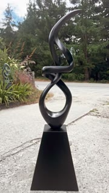
►Giving ‘Harmony’ a final base fit for before she is packed up and send over to a private collector in the states - love the flow on this pie
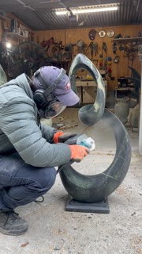
►The finishing touches on the latest piece ‘Harbour’ carved from a beautiful bit of Olivine Serpentine and on display in @birdwoodsgallery
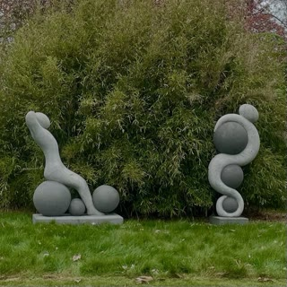
Eudaimonia - seeking and achieving - two pieces sculpted using Polyurea and crystal quartz -they explore our states of tension and relaxatio
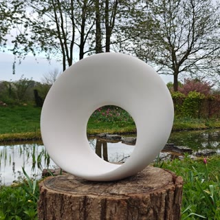
Infinity circle #infinity #circle #möbius #mathart #abstractart #mathform #contemporaryart #ceramicart #whiteart #möbiusband #mobiusring
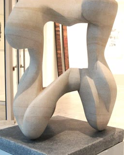
"Annäherung" Baumberger Sandstein / H43 B34 T25 #Kunst #art #Steinbildhauerei #atelier54 #Münsterland #KristianNiemann
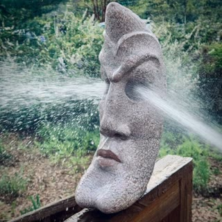
►A stranger splash . . . #Sculpture #StoneSculpture #MarbleArt #Sculptor #GalleryArtist #ContemporaryArt #ContemporarySculpture #ModernArt #A
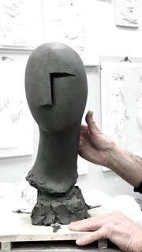
►Modello per la realizzazione in marmo. “FORMA” 2025, creta. ( Omaggio a Brancusi ). #modellazione #brancusi #sculptor #sculptorsofinstagra
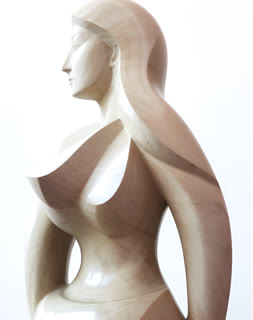
John Opera- Neo-Classic Collection- 2025 DM for collab, exhibition and commissions #abstract #abstractsculpture #ballerinas #classic #class
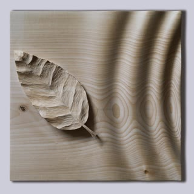
“DERIVA” 2010, legno di tiglio, cm. 40x40x6 (Como collezione privata) . #deriva #viaggio #dispersi #naufrago #legnochepassione #legno #le
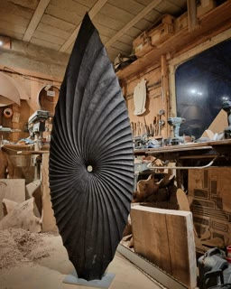
I don't usually post photos of my work in my messy workshop but I am so excited about this one that I couldn't wait! The tallest one so fa
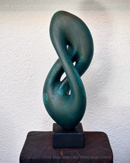
Unikat Name- Unendlich Zeitlos Farbe- Kupfer Finish- Patina Dimension-35x13x12cm #kupferkunst #copperart #Sculptureart #AbstractSculpture #
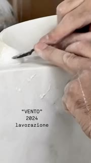
►“VENTO” 2024 , #marmo #calacattaoro #carrara . Cm: 66x 37 Eseguita negli spazi di S-cultura della ditta Pusterlamarmi di Como. # #marble #
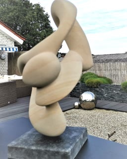
"Bewegung" / Baumberger Sandstein / H34 B27 T14 #Kunst #art #Skulptur #atelier54 #Münster #Münsterland #KristianNiemann
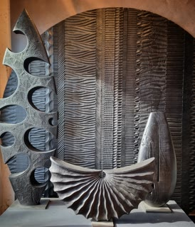
Black mode, light mode. #sculpture #benoitaverly
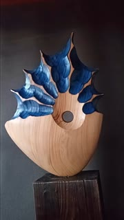
►Madera de Cedro. #lakariart#wood#woodwork#woodart#homedecor#handmade#hechoamano#hondarribia#bois#basquecountry#escultura#esculpture#euskadi#
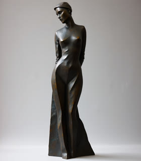
John Opera - Elegance- 2025 DM for collab, exhibition and custom orders #abstract #abstractsculpture #ballerinas #classic #classicsculpture
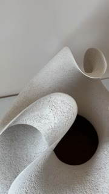
►TRINITY. #gres #danishartist #softminimalism #scandinavianceramics #clay #grès #keramikkunst #ceramicsculptures #ceramicsculptures #clayarti
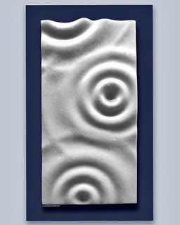
“PIOGGIA” 2009 #marmo bianco #naxsos Grecia , (Como collezione privata). Cm: 60x40x6. #marble #marblenaxos #marblestone #marbleart #marbles
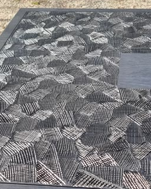
Playing again with this texture. #sculpture
2024 48
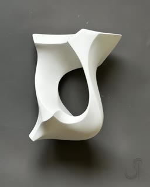
New week, new sculpture… into the void… #sculpture #fineart #carving #sophieelizabeththompson #publicart #interiordesign #architecture #hos
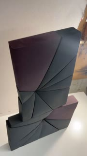
►Two Purple Corner Geometries #woodsculpture #geometricart #kineticart #wallsculpture #modernism #artecinetico
‘Chasing the Curve’ - a commission of my favourite form in Kilkenny Marble - it stands just 38 cms tall…rather different from the 2.3 metre
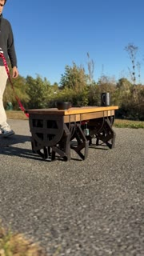
►Coffee table stretching its legs! #engineering #woodworker #3dprinting If you want to make one yourself comment “files” below and I’ll sen
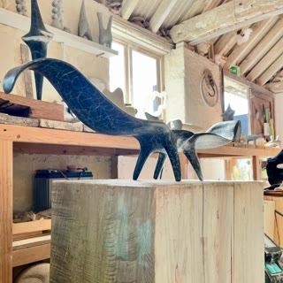
Winged thing. #stone #sculpture #art #kilkenny
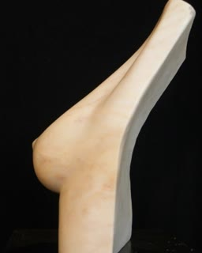
#Borst gemaakt van #Portugees marmer in 2018. Thema gekozen in het kader van #Pink Ribbon en preventief onderzoek. De voorstelling is de o
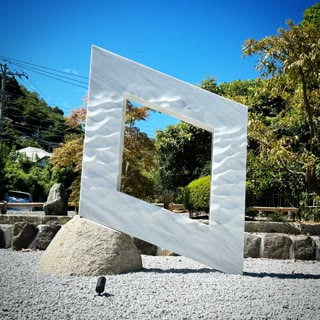
Resounding Sea by Hironori Katagiri. . #ukishimasculpturestudio. . #katagirihironori #marble #marblesculpture #stonesculpture #tokyo #public
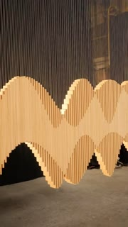
►When I was designing this sculpture I was thinking of making every other piece of wood a different color. That way it would be easier to se
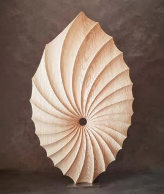
Could be a leaf... #sculpture #benoitaverly
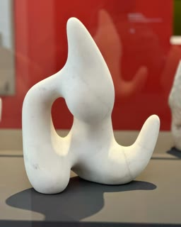
SculpTour 2024 Hans Arp Aus dem Reich der Gnomen, 1949 Marble “Cosmos Arp - Sophie Taeuber-Arp and Hans Arp. A pair of avant-garde artists”
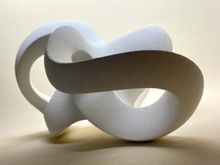
Finding the right angles for the photo #sculpture #sculptures #sculptureart #sculpturepictures #sculptureartist #sculpturelovers #sculptureo
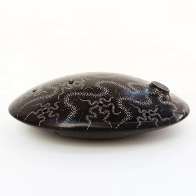
@noemipalacios_ Yo que buscaba llegar a la luna y la llevaba en mí " mármol de Calatorao 2019 #abstractsculpture #artcurator #artcollector #
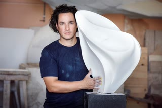
The sculptures of Gustavo Velez narrate a creative vision that blends geometry, perfection, and linearity, both in lines and in the chosen m
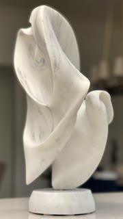
►This is the one that kick started my love of carving marble! A lot of firsts happened with this one and I will always have a special affect
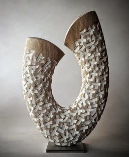
This one is called "snow in spring" Sold a few years ago to a client in the US. #sculpture #benoitaverly #interiordesign #artgallery #dec
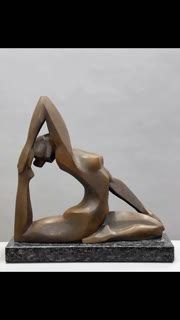
►Bermuda Triangle 50x50x17cm 2024 #dusanmocko#artist#künstler#sculptor#painter#designer#art#kunst#contemporary#symbolism#mythology#sculptu
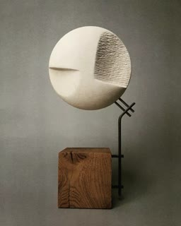
Autoportrait sans chapeau H. 32 cm #artcontemporain #art #artecontemporaneo #artwork #artwork #arte #kunstgalerie #kunst #sculpting #sculpt
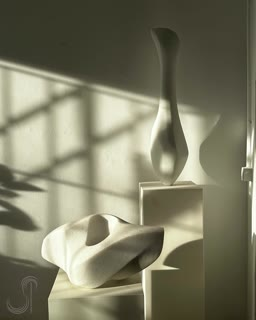
Happy Friday evening light in the studio #barcelona #fineart #artiststudio #sophieelizabeththompson #publicart #interiordesign #hospitalit
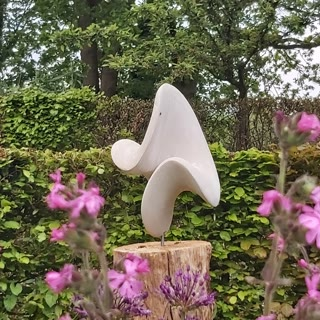
Omega, one of my favourite works. Now surrounded by flowers, bees and bumblebees. #stoneart #art #rhythm #sculpture #nature #form #organic #
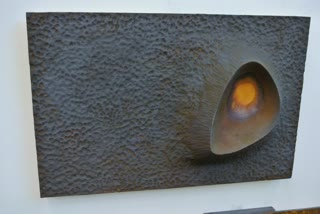
Piel de Hierro. #woodart #escultura #modernart #contemporarysculpture #contemporarydesign #geometricart #arttoronto #artmontreal #abstracts
►
C6UIU1ht5r-
►
#upcyclingart
►
Le dos féminin, bronze, patina * * * #sculpture #bronzesculpture #bronze #patina #contemporaryart #contemporarysculpture #irinashark #irinas
Amo il marmo Amo la scultura Amo la forma #marmo #marmodicarrara #marmobianco #marble #marbletiles #marblesculpture #marblestone #marblear
Half moon 15 cm #sculpture #benoitaverly #interiordesign #artgallery #decoration #texture #motif #pattern #ceramics
The Tiniest Spark #woodart #escultura #esculturamadera #contemporarysculpture #contemporarydesign #artvancouver #arttoronto #artmontreal #g
Holothuroidea w48,d27,h49cm #ceramicart #abstractart #sculptureart #contemporaryart #blackart #geometricart #kurokawatoru
#ciriaco#sculpture#art#picoftheday#modernart#contemporaryart#creativity#design#interiordesign#sculptor#architecture#escultura#arte#artista#a
Alte Arbeiten im neuen Raum #bildhaueratelier #neuesatelier #atelierimbahnhof #newstudiospace #newstudio #sculpturestudio
It’s such a joy to see the sun out showing off artwork in the sculpture garden. #art #carve #sculpt #marble #gallery . . . . . . . . . .
►
Some of my Fierros #woodart #escultura #esculturamadera #contemporarysculpture #contemporarydesign #artvancouver #arttoronto #artmontreal #
Particolare
Vertebral #woodsculpture #modern #abstractart #granvilleisland #handmade #cubism #esculturacontemporanea #nogal #artemexico #clarowalnut #ge
Vertebral #woodsculpture #modern #abstractart #granvilleisland #handmade #cubism #esculturacontemporanea #nogal #artemexico #yellowcedar #ge
Geyser #sculpture #benoitaverly #interiordesign #artgallery #decoration #texture #wood #woodcarving #motif #pattern #architecture #decorati
New connections. As we travel along the path of life, we find necessary stops to catch our breath and connect with ourselves. Sometimes, we
#mobius #möbius #ceramics #sculpture #clay #ceramicarts #abstractsculpture #creativity #sculptor #modernart #craft #design #interiordesign #
Some sunny days I wish it was raining. #woodsculpture #escultura #wallart #organicart #handmade #blackwalnut #vancouverart #artevenezuela #a
Torso abstracto #contemporaryart #galleryart #art #sculptures #artwork #artlover
Parallel Forces No.8 Yellow Cedar View over 30 available pieces at mikesasaki.com #abstractsculpture #modernart #contemplativeart #form #a
Ellipticalsquare Bowl #woodart #escultura #esculturamadera #contemporarysculpture #contemporarydesign #artvancouver #arttoronto #artmontrea
This took a completely different direction than my thought. I was being stubborn but eventually admitted defeat and should’ve listened to th
►
The Madame and the Dreadlock Wrap. #escultura #modernart #contemporarysculpture #seattleart #geometricart #arttoronto #artmontreal #abstract
►
Cypress Lady . #escultura #modernart #contemporarysculpture #seattleart #geometricart #arttoronto #artmontreal #abstractsculpture #directsc
►
Aras, altares y mesas de ofrendas II. 2024 Roca caliza. #artearayas #art #artwork #escultura #esculturacontemporanea #sculpture #stone #ritu
►
Grainlight #woodart #escultura #modernart #contemporarysculpture #contemporarydesign #geometricart #arttoronto #artmontreal #abstractsculptu
#art #sculpture #gallery #artgallery #artmoderne #artistecontemporain #sculpteur #artist #artistes #sculpturebois #sculptureart #galeriedart
►
Happy Throwback Thursday everyone;) #kinetic #metalart #art #metal #sculptures #metalsculpture #metalwork #metalartist #artist #welder #wel
2023 36
Такой скульптурой не делился еще с вами друзья, не могу подобрать название. Возможно у вас будут интересные варианты? Предлагайте! I haven’
►
Intersecting Monumental - Graphite on Newsprint
'Scars' staruario marble. Todo lo que vivimos nos transforma, manteniéndonos en constante evolución. A veces cuando ocurren sucesos difícil
►
CvX2iJyIsI0
►
Finishing a sculpture base. This is actually two pieces of a paving slab, cemented together and finished with automotive body filler. I am a
►
CuSo9gqoGQl
my current psycho-physical state. @danyszgallery in Paris with @m_city_mariusz_waras for @the_dictador #art #contemporary #contemporaryar
►
M-city/Górnicki for Dictador with Danysz :) Nice matching,great evening in Paris. #art #contemporary #contemporaryart #urban #urbanart #sten
Dal classico al moderno torso Gaddi e torso Mitoraj #gaddi #mitoraj #model #art #artegreca #arteromana #uffizzi #florence #marble #arteinmo
Autumn fade xl version now showing @sculptureforclyde , #batemansbaynsw #sculptureforclyde #abstractsculpture #granitecarving #granite #nswc
►
Gracias @artoftheworldgallery por esta publicación 🙌🙌
River Spirit by Kate Thomson. . #ukishimasculpturestudio. . #katethomson #marble #marblesculpture #stonesculpture #tokyo #publicsculpture #a
Sold! Owl, bronze, no.7 of a limited edition of 8. I gave it richer colour, suits it👍🏻 #oxfordshireartweeks #bronzesculpture #contemporarysc
Derrière chaque grand homme, il y a une Femme. #boufarit
►
Una piccola copia in marmo statuario del David di Gian Lorenzo Bernini A small statuary marble copy of Gian Lorenzo Bernini’s David Galleni
Глаз левый (Давида) #маски #архитектурныедетали #голова #бюст #экорше #обрубовка #скульптура #вазы #формы #силикон #отливкиизгипса #рельефы
►
originales Chimère Bois d’If Taille directe / Ronde-bosse 80 x 15 x 13 cm #art #design #artist #painting #designer #france #contempora
#kalkstein #abstractart #skulptur #steinbildhauer #kunstwerk #kunst #photography #fotografia #fotografi
New work ! #sculpture #sculptures #sculptureart #sculptor #sculptureoftheday #sculptureofinstagram #scuplturelovers #sculpturestudio #escult
►
Noche, bronze sculpture 100 x 32 x 45 cm . . . . #art #sculpture #noche #night #arte #cesarorrico #escultura #cesarorricosculptor #spanishar
Fern columns 65 - 125 cm #sculpture #wood #woodworking #woodart #woodturning #bois #art #artwork #tournagesurbois #decoration #architectur
Title: Magic moves #sculptere #sculptures #sculpturesofinstagram #sculpting #sculptors #sculptor_art #escultor #escultores #sculpturelovers
CpAISRRMydQ
►
Check out this new 5 foot sculpture I’m working on. . . . . . #outdoorsculpture #sculpturegarden #sculpturepark #outdoorgallery #openairmus
...e vissero felici e contenti #sculturalegno #sculturacontemporanea #sculpture #handmade #sicily #artist #beautiful #wood #contemporarywood
►
‘Recovered Sculpture’ #2, 17” H x 9”W x 7”D, Grey alabaster, two piece black Micarta base with hidden ball bearing swivel mechanism. This is
►
Thinking about the necessity of safe spaces we create with one another in the brevity of a moment or lifetime. Been writing down poems(a new
#ba_mojasameha #with_sculptures #منبت #مجسمه #بامجسمه_ها #هنر #آموزش #آموزش_پیکر #آموزش_منبت #دنیای_مجسمه #مجسمه_سنگی #مجسمه _فلزی #مجسمه _چ
Title: Flowing #sculpture #sculptureart #sculptureartist #sculptures #sculpturestudio #sculptor #sculptureoftheday #sculptureofinstagram #sc
#ba_mojasameha #with_sculptures #منبت #مجسمه #بامجسمه_ها #هنر #آموزش #آموزش_پیکر #آموزش_منبت #دنیای_مجسمه #مجسمه_سنگی #مجسمه _فلزی #مجسمه _چ
►
Abstract patterns in pine
CnJtBOSI-QW
#alabaster #sculpture #abstract #white
Form and Formless No.2 2018 Yellow Cedar View currently listed pieces at mikesasaki.com #abstractsculpture #modernart #contemplativeart #m
Yesterday I installed my latest sculpture called Sirena Rossa in her new home. So proud to be in the same room with many other beautiful art
Girevole… #gustavovelezescultor #gustavovelez #marblesculpture #carrara #marmodicarrara #carraramarble #whitemarble #staturarymarble #monum
2022 37
►
2022 is the year I fell in LOVE … with MARBLE • • • #contemporarysculpture #contemporaryart #contemporaryfigurativeart #sculptor #fineart #f
#ba_mojasameha #with_sculptures #منبت #مجسمه #بامجسمه_ها #هنر #آموزش #آموزش_پیکر #آموزش_منبت #دنیای_مجسمه #مجسمه_سنگی #مجسمه _فلزی #مجسمه _چ
#ba_mojasameha #with_sculptures #منبت #مجسمه #بامجسمه_ها #هنر #آموزش #آموزش_پیکر #آموزش_منبت #دنیای_مجسمه #مجسمه_سنگی #مجسمه _فلزی #مجسمه _چ
ClUcRpGoozt
"Beach Crawler" marble sculpture from 2003 #inspiration #sculpting #artist #marble #sculpture #artwork #stones #artgallery #gallery #escult
Ck8kDeEPLmA
►
- #sculptures #artist #flanders #heule #kunst #kunstenaar #belgium🇧🇪 #marble #carrara #artists #art #bronze #sculptor #tuinbeelden #beeldend
►
The first of my three bound angels. Colorado alabaster, available for purchase. #sculpture #sculpture_art #stonesculpture #stonesculptor #s
… it’s all about the feminine, her curves, flow, grace and beauty 🤍
Aphrodite by Kate Thomson @ishigami_muse . . #ukishimasculpturestudio. . #katethomson #marble #marblesculpture #stonesculpture #tokyo #publ
SOFT SPOT. Textured sculpture Carrara marble. #marble #sculptureart #artwork #shape #carraramarble #handmade #madewithlove❤️ #white #dani
Very pleased to have two stone sculptures selected for the excellent Oxford Art Society Open Exhibition this year. The exhibition at The Clo
⠀ <安>
Aphrodite completed. . #ukishimasculpturestudio. . #katethomson #marble #marblesculpture #stonesculpture #tokyo #publicsculpture #artinteri
⠀ <HOLE>
Cggz3hjP8rb
►
Something new in the works. . . . #AncientRome #AncientRomanArchitecture #RomanArchitecture #AncientGreece #AncientGreekArchitecture #GreekA
⠀ < WORM HOLE> ⠀ 160x395x520(mm) Italian marble 2021
A little limestone sculpture of mine representing a moment of joyous energy captured in time..its organic lines work so well in a garden set
Sculptor Zyuzin Nikolay Nikolaevich, Скульптор Зюзин Николай Николаевич #woodcraft #woodwork #woodshop #reclaimedwood #woodworking #woodart
"Ti proteggo" 2017 to Elia #Sculpture#refugee #nature#statuariomarble #carraramarble #Italy #istart #organicshape #sculpture_art #artcollec
Couple By #boufarit
►
#love #loveislove #lovestory #artlove
Dark Artifact #artifact #sculpture #texturedart #woodworking #australia
This is one of the sold sculptures I have sent recently and has now found its final place....😅 I am always very happy when a customer joyfu
A Filippo🍀 #drawing#refugee#artlovers#art#Italy #italianartist #istasculpture #istart #contemporaryart#art #francescabernardini_sculptures
Could be lingerie.... #sculpture #wood #woodworking #woodart #woodturning #bois #art #artwork #tournagesurbois #decoration #architecture #
►
On the move…..to on form 22 @on_form_sculpture ‘Ancient Pleasures II’ - Portuguese Marble & Kilkenny Limestone - 1.18m x 30cm x30cm . . . .
Max Bill, who once shared space at the SGF studio in Carrara, Italy #MaxBill
New beauty available! From the memory labyrinth series, created with the most fine black Belgian marble, pure jewellery. #stonesculpture #c
Déesse blanche, stéatite, février 2022. @art_in_sculpture @sculpture_gallery @artcontemporainetculture @sculturaart @lasculpture @sculpture
A brand new piece competed today #Relic #art #woodwork #sculpture #australia
Détail #sculpture #wood #woodworking #woodart #woodturning #bois #art #artwork #tournagesurbois #decoration #architecture #interior #inter
#marmor #stahl #abstrakt #bildhauer #bildhauerei
CZ2qCL6op60
►
Difference and similarities... #sculpture #wood #woodworking #woodart #woodturning #bois #art #artwork #tournagesurbois #decoration #arch
Supernova by Radoslav Sultov 2011 BenQ International Sculpture Workshop, marble, 210 x 210 cm #supernova #genesis #sculpture #radoslavsultov
2021 56
Let's carry on with another selection. Which one is your favorite ? #sculpture #wood #woodworking #woodart #woodturning #bois #art #artwork
I'm enjoying the fluid lines of my sculpture currently on display at Savill Garden in Surrey as part of 'Art In The Park' sculpture trail 😊
This piece is called Reassembowled. Basically a half round bowl cut in half and glued back on at 90 degrees. Made close to 15 years ago and
🟢
Sketch for sculpture #hansgiovannigrohe #sketchart #skizze #skizzenbuch #skizzenblock #dibujoexperimental #figurativeart #figurativedrawin
Schleifst Du noch oder stellst Du schon aus? #limestone #stonesculpture #outsidesculpture #lenglern #hellameyersculpture
Wall panel 90 cm 2019 For @jean_philippe_nuel for @ponant. #sculpture #wood #woodworking #woodart #woodturning #bois #art #tournagesurbois
Endless Love Kudzanai Dambaza, Granite Photo by Thorsten Marquardt #kunsthalle_schnake #kunstauszimbabwe #kunstausafrika #kunsthalle #kunst
I am beyond happy that my work "Untitled" is entering the @fundacionama_ collection! An enormous Thanks to @juanyarur !
►
Questa è la storia di uno scarto ⚒ • JAGO | Muscolo Minerale Luogo | @santannadeilombardi
Let's have a looksie under the hood, shall we? This was how this beast was positioned for most of the carving. It looks best in the wrong o
Few hours oh hard work... with nothing else but sanding paper.. can you see the difference?? #reign59 #sculptuur #beeldhouwen #kunst #art_c
When St Nicolas’s gothic style church windows at Asthall become the perfect backdrop for one of your sculptures....👌placement @annagreenacre
CPAT_83HO17
Relief einer liegenden Frau #hansgiovannigrohe #relief #bas-relief #frauenskulptur #frau #woman #femme #donna #mujer #vrouw #sculpture #esc
Scottish knotwork 💚 Photo from Lenathehyena's blog. #stonecarving #handcarved #granite #celticknot #stone #ancientskills #scotland
Serie de Huellas 2009. El año que nació mi hija me salieron varias esculturas compuestas por tres elementos. #sculpture #marblesculpture #st
Portugees marmer
"Stretta" Pietra della Majella 2021 . . . . . . . . . . . . #sculpture #sculptor #clay #figure #figurative #scultura #escultura #fromlife #
“Wending” Serpentijn
‘Small sun seeds’, 2010 this was actually a model for a much larger public art commission. I’ll be discussing this piece as part of a talk
Alabastro blanco @adawieghaliyaesculturas #stone #stonecarvingart #stonesculptor #sculptures #sculpture #sculptor #contemporaryartsc
How would you call a sculpture like this? #sculpture #wood #woodworking #woodart #woodturning #bois #art #tournagesurbois #decoration #archi
'Ode aan de vrouw' . Nationale vrouwendag
Kate Thomson and Hironori Katagiri at Implexus Gallery, Japan. . #ukishimasculpturestudio . #katethomson #katagirihironori #marble #marbles
Charlotte Mayer 'Sea Circle Maquette' Photography @steverussellstudios @gallerypangolin #foundry #seasculpture #bust #circle #seac
‘Cascade’ ...just had to make it... stole some time away from commissions :)
a new and animated work, photographed in the studio. Upolo, Carrara marble, 2021. #richarderdman
Terracotta sketch maquette prior to firing. Thinking ahead to my show this November with the Fine Art Society in Edinburgh. #fasedinburgh.co
Nijumaru by Kate Thomson, Carrara bianco marble. . Our exhibition, “Lyrical Abstraction” in Morioka, Japan starts from today. . #ukishimasc
from the archives: scanned slide of “Profile,” carved from Belgium black marble, 1979. #richarderdman
SWELL / Cast Bronze / . . . . . . . . #sculpture #art #bronze #fineart #abstract #abstractart #organic #natural #minimal #patina #patination
Curlew II in Yorkstone - yearning to hear their evocative calls again. Each spring they fly to the moorland here to breed, and I see them f
"NASAGHI" 2011 #sculpture #marble #sculptures #carrara#carraramarble #statuariomarble #Italy#italianartist #artexibition #artecontemporanea
Nebula I, Carrara marble, reverse. Another former #on_form_sculpture piece, from 2016. #contemporarystonesculpture #contemporarysculpture #s
from the archives: slide scan of “Fiore,” carved from Spanish marquina marble in the early 1980s.
"Ti proteggo" 2018 #sculpture #marble #carrara #statuariomarble #Italy #italianartist #women #hendmade #abstractart #contemporarysculpture #
Sketch for sculpture #drawingforsculpture #sketchforsculpture #sketchart #skizze #skizzenbuch #skizzenblock #dibujoexperimental #figurative
Richard Erdman ‘Seri Tai’ at the Carrara, Italy studio 2019 Carrara Marble 126 x 75 x 59 inches La Bella Vita, Taichung, Taiwan "One of the
Sketchs for garden sculptures #hansgiovannigrohe #sketchforsculpture #skizze #sketch #skizzenbuch #skizzen #skizzenblock #inkdrawing #tusch
The one and only Jean Arp working in his garden, polishing a marble sculpture. Photo by Gion Mili for LIFE Magazine. #jeanarp
The Dance Taurai Rukodzi, Serpentin Photo by Thorsten Marquardt #kunsthalle_schnake #kunst #thedance #taurairukodzi #serpentin #sculpture #
Marmer
I had called this one Mali. #sculpture #wood #woodworking #woodart #woodturning #bois #art #tournagesurbois #decoration #architecture #inte
Wall panel "Dionée" 80 x 80 cm #sculpture #wood #woodworking #woodart #woodturning #bois #art #tournagesurbois #decoration #architecture #i
Una obra de arte no puede separarse de su autor.” Immanuel Kant A work of art cannot be separated from its author. " Immanuel Kant @adawi
"nido d'inverno" 2003 #sculptureart #marble #carrara #art #Italy#sculpture #marmo nero Carrara #art #nature #organic #istasculpture #sculptu
Sketch for sculpture #hansgiovannigrohe #sketchforsculpture #federzeichnung #skizze #skizzenbuch #skizzenblock #inkdrawing #drawing #figura
Henry Moore morning #henrymoore
Alexandre Grivko . . . . . . . . . . . . . . . . . . #art #artwork #artoftheday #arts #artstagram #artshow #artlife #art
Three pieces just mounted. #carraramarble #interiordesign #interiorart #contemporarymarblesculpture #contemporarystonesculpture #sculpture #
Drawings for sculptures #hansgiovannigrohe #drawingsforsculptures #sketchart #skizzenblock #germanartist #germanart
CJmhHHknnFk
. Form and Formless No.8 2019 W7", H6.5", D6" . View in more detail at mikesasaki.com . The whispering breeze Sets fire flies blinking, Spar
Fern columns. Detail. #sculpture #wood #woodworking #woodart #woodturning #bois #art #tournagesurbois #decoration #architecture #interior #
Auto-balanced piece 2009 60 cm #balance #equilibrium #sculpture #wood #woodworking #woodart #woodturning #bois #art #tournagesurbois #decora
2020 68
#sculpture #wood #woodworking #woodart #woodturning #bois #art #tournagesurbois #decoration #architecture #interior #interiordesign #artgall
Sequins 380x380x25mm Hand carved Portuguese limestone. ⠀⠀⠀⠀⠀⠀⠀⠀⠀ Available to buy on my website, the link is in my bio. Or send me a message
This is a close up photo of ‘Sequins’. Hand carved in Portuguese limestone in 2018 this is one of my favourite pieces I’ve ever made. ⠀⠀⠀⠀⠀
Necklace? #sculpture #wood #woodworking #woodart #woodturning #bois #art #tournagesurbois #decoration #architecture #interior #interiordesig
WIP Macedonian Sivec marble. The interminable filing/sanding stage
Marble belly detail
90 cm round panel made for @ponant #sculpture #wood #woodworking #woodart #woodturning #bois #art #tournagesurbois #decoration #architectur
'Whirlpool Galaxy' by Al Sieradski! . French Marble, Black Granite Base 18x20x10 $2,950 . See more by Al on our website! . If you love art
►
Sai, a volte mi dicono che sono molto classico.. troppo...e io penso che in realtà questo è un complimento! Perchè classico è quello che ri
Sculptor Zyuzin Nikolay Nikolaevich, Скульптор Зюзин Николай Николаевич #woodcraft #woodwork #woodshop #reclaimedwood #woodworking #woodart
SculpTour - Virtual Studio Visit Guy Stevens Onda (2018) Ancaster Weatherbed Studio: Guy Stevens Stone Sculpture, Upper Stoneham Farm, Lewes
It's like a poem ... stonenewsEU #naturalstone * * * * #marbledetails #stonenews #marbledesigns #welovemarble #stoneisbetter #marblefair #
Whilst getting on with some lovely commissions I haven’t totally stopped on this piece, it’s just so lovely to keep it progressing. 40 secti
►
De la serie "Vestigios" (2019): Alabastro negro con base de granito (47 x 40 x 22 cm) #esculturaenpiedra #escultura #esculturacontemporanea
Ventanas del alma, fragmento. Carrara marble. #interiordesign #studioshot #contemporarysculpture #dissenyinteriors #stonesculpture #noemipa
Lovers III, soapstone. #contemporarystonesculpture #contemporarysculpture #stonecarving #stonejunkie #modernsculpture #artsculpture #sculptu
Another view of yesterday’s post “Embrace”
In spite of everything.... finally completed! - - - #sibyllepasche #contemporarysculpture
Organic Form / Cast Bronze / Natural Patina / . . . . . . . #sculpture #art #bronze #fineart #abstract #abstractart #organic #natural #mini
Another pair of rings since it seems you enjoyed yesterday's. #pair #rings #lordoftherings #sculpture #wood #woodworking #woodart #woodturni
Early pair of rings. 25 and 50 cm. Ash 2009 #rings #lordoftherings #sculpture #wood #woodworking #woodart #woodturning #bois #art #tournages
Continuing to look back at past figurative work, here is a close up of another one! ..Probably my most successful figurative sculpture, both
Back to last January at the show @maisonetobjet #sculpture #wood #woodworking #woodart #woodturning #bois #art #tournagesurbois #decoration
This is Fracture I, Kilkenny limestone at Asthall Manor for #onform16. Now at #cotswold_sculpture_park. #contemporarystonesculpture #contem
Various works . #sculpture #bronzesculpture #bronzeedition #sculpturenow #photooftheday #artphotography #artistsoninstagram #architecture #
Just came across this shot of a sculpture placed together with a paitng of mine at a clients house. #sibyllepasche #paintingandsculpture
As I'm spending some time battening down my studio for Winter, I thought I'd travel back in time over the next few weeks and share with you
Work in progress. Black Belgian marble not yet polished is mouse-gray. #sibyllepasche #contemporarysculpture
40 and 15 cm. 2018 #sculpture #wood #woodworking #woodart #woodturning #bois #art #tournagesurbois #decoration #architecture #interior #inte
Waves - 80 x 80 cm 2014 #wallart #sculpture #wood #woodworking #woodart #woodturning #bois #art #tournagesurbois #decoration #architecture
Qué cosas tiene la vida! Nunca sabes por que sendero te hará caminar, qué nos deparará el siguiente cruce? No tengo ni idea, pero estoy dese
►
SculpTour 2020 - Studio Visit Jörg Wiele Scheibenmandala (2010) Kinetic wall sculpture with nine hand-moved discs Mold sizes: 30 - 100 cm,
Me emociona volver a ver obras mías que no he visto en muchos años (piedra pizarra). #josemanuelcastroescultor #escultor #escultura #escultu
CFiLGafHpcP
68" Tall, Italian Alabaster #somersrandolph #stonesculptor #santafeartist #sculpture #stonecarving #art #somersrandolphgallery #Artist #ston
►
BLOOM - 1 / Digital model created by 3d scanning original work. I am making this model avaliable on my website to purchase on a free to use
SculpTour 2020 Charles Kohl Veiled Forms (1982) White marble Exhibition “Charles Kohl - Drawing & Sculptures” (through 17.01.2021) Location:
Cuarzo #josemanuelcastroescultor #escultor #escultura #esculturadepiedra #piedra #piedrasvivas #piedrasblandas #talla #artista #artecontempo
"O Conquistador" marble, 2012 #inspiration #sculpting #artist #marble #sculpture #artwork #stones #artgallery #georgscheele #marblesculptur
2 of 3 ‘Samar’ 400x600x20mm Hand carved Aberllefenni Welsh Slate ⠀⠀⠀⠀⠀⠀⠀⠀⠀ Whilst this carving has already been purchased, there will be a
鍊Fortifying 26cmx42cmx39cm
Sharing another view! Happy Sunday everyone 🌞
「black apple」 granite. brass. #stonesculptures #stonesculpture #石 #great_sculptures #sculpture #石彫 #彫刻家 #石彫家 #石を彫る #りんご #石の林檎 #幸せの林檎
Keizo Ushio, ‘Oushi Zokei’, Sculpture by the Sea, Bondi 2016. 📷Gareth Carr #artistswithoutborders_official #artistswithoutborders #keizous
Day 10... ten day challenge... some old some new, studio shot... thanks for following... #tendaychallenge #brighton #stonesculpture #art
►
on form 20 is still running online (until the end of the month), this piece of mine ‘Stretch’ is one of many sculptures available to buy. Cl
#abstractart#whiteopal#forsale#interiordesign#contempoaryafricanart
Spring by Kate Thomson and Hironori Katagiri set on site in Ebina. . #ukishimasculpturestudio . #katethomson #katagirihironori #marble #ma
My biggest fans! 💖 I'm a very proud Aunty when Holly & Amber talk about how much they love art and making stuff 😊 They came to visit my stud
Wax is a great material for making a maquette or 3D sketch of your idea..and it lasts for hundreds of years! ..this one is an idea for a new
►
Skulptur aus Cristallina Marmor Colombo aus dem Maggiatal im Tessin Schweiz #marmodicarrara # sculptor #arte #artista #Sculpture #Stonecarv
Getting closer
CDKKsX_n1Bc
►
‘Proteus’ currently available online via @on_form_sculpture Indian black serpentine base and Carrara marble hand. Check out this and many
CD9Bm0knUKi
"Empress of the Dreams" marble sculpture. This is one of the sculptures that can be seen in the Rarity Gallery in Mykonnos / Greece https:
►
Skulptur aus Marmor Bianco Pi in Peccia gefertigt Juni 2020 #carrara #carraramarble #biancopi #stone #sculture #marmor #peccia #kunst #swis
Marmor Skulptur Bianco Pi 01.2019 #carrara #carraramarble #stone #kunst #stones #skulptur #art #marmor #peccia #carrara #carraramarble #bia
Next one nearly ready #inspiration #sculpting #artist #marble #sculpture #artwork #stones #artgallery #georgscheele #marblesculpture #creat
CBoYvlqHnxM
CBoYoKhHz1a
Mijn grootste sculpture staat te shinen in mijn tuin! #sculpture #beeldhouwen #marmer #marble #tuin #garden #art #rododendron #kunstinjetuin
►
I like to share with you this work "Focal point" in Kilkenny marble, witch was on the online exhibition "Art From The Heart" run by @zuleika
‘Breath’ Hand carved in Welsh slate 300x300x20mm ⠀⠀⠀⠀⠀⠀⠀⠀⠀ #ZoeWilson #StoneArt #NewArt #WallArtDecor #ArtCarved #OriginalCraft #StoneCarvi
Serpentijn
. CREMA, CREMA Carrara marble Detail 01 . . #sculptureart #chiselandhammer #sculpture #marble #craft #artisan #contemporaryart #design #fr
Stormy morning at the studio..... - - - #sibyllepasche #abstract #contemporaryart #contemporarysculpture #marblesculpture #zurichbased #mei
Flashback to 1998: “Sonnet”, carved in Carrara marble caught our eye in the archives
2019 13
Work in progress - - - #sibyllepasche #sculpturestudio #artiststudio #carrara #italiabella #tuscany #marble #carraramarble #sculpting #outdo
Sand Bars
#figuresculpture #ceramicsculpture #contemporaryceramicsculpture #slipcast #porcelain #sculpture #彫刻 #陶彫 #鋳込み
‘The Plough’ - Kilkenny Limestone- 1.7m x 40cm x 30cm. Exhibition opens Friday 29th March 2019 . . . . . #jasonmulligansculpture #stonesculp
Work’s name: The eternal motion Sculptor : Wu Ming-Sheng Work of Size: L22cm‧W18cm‧H52cm Photo by sainsain666
BuZzcdLBsEv
Sculpture Kelvingrove Museum and Art Gallery. Syrinx by William McMillan 1887-1977. Marble about life size. #sculpture#britishsculpture#marb
#scultura#sculpture #pittura#picture #arredamento #art#arte#sculturamoderna #
Grooved Whorl. Slate Sculpture Tim Pomeroy. One of the Two Gentlemen Of Arran , exhibition staged by Merville Galleries at a top location Ho
Small scale work #sibyllepasche #ateliersibyllepasche #newartwork #workinprogressart
Alweer vier jaar geleden. #beeldhouwen #sculpture #portugees marmer #figuratief
New Granite piece work in progress... - - - #sibyllepasche #blackgranite #contemporary_sculpture #contemporarysculpture #abstractart #artist
#stonesculpture #marble work in progress
2018 10
GO WITH THE FLOW - work in progress- Through the ages, the #infinity symbol, a sideways figure eight, has represented eternal development an
Izmir 2018
‘Camiciola’ ( hemdje) Marmo: Giallo di Siena 23 x 18 x 8 cm
#workinprogress #sibyllepasche #contemporaryart #contemporarysculpture #marble #contemporary_art #abstractart #abstractsculpture #architect
Both Sides - Nieuw Zeelands Kalksteen - Staal - Binnen-Buiten beeld #steen#beeldhouwen#kunstwerk #kunst #atelierdesteengroeve #klaaskuipers
@on_form_sculpture Sculptor 20/40 And the countdown begins! We are halfway though our artist a-z. Our 20th sculptor is Alison Munby. Alison
Handmade marble head/face 🙂#handmade #skulptur #skulpture #bildhauerei#viralartz#young_arts_help #art #art_support #art_moonlight #viralart
Handmade marble skulpture made by myself🙂 #handmade #skulptur #skulpture #bildhauerei
‘The way you make me feel’. . . . . . . #jasonmulligansculpture #lilacmarble #hammerheads #contemporarystonesculpture #artandarchaeology #an
Procesos. #workinprogress #artwork #myart #art #artist #contemporaryart #contemporarysculpture #abstractart #sculpture #sculpturestudio #art
2017 4
Shell, Carrara Marble. 30x25x15cm
Bronze casting of 'Woman in Stone.' #Bronze #bronzecasting #art #sculpture #figurativeart
BW_6vX9gHP-
#snails #sculpture #stone #inspiredbynature #nature #white #homedecor #artforsale #artconsultant
2016 2
De mis preferidas. Flecha 2014 #gravitacion #sculpture #escultura #art #artwork #feriaflecha #abstract #abstractart #madridart #comtemporany
Ditto
2015 1
#marble #axe #head #stone #sculpture #interior #art
2014 1
j1QVU7qSiX
Undated 22
DZH6PUHo50N
DRkRVN5jCqN
DQEkpG8k6zo
DP8TimtiEqW
DOlmTloAuOp
DN_WahECBez
DCo2J4eISd7
CxyLxoKonYN
CE96traBhde
CE-PQzXn27V
CCLg--ghqGX
CAhMubSl1F3
C9IPy5Eo52Z
BykPLJmo3or
ByIAJqior1_
BxFU_kegyaD
BvhjIFHDx5L
BugXF8uBWld
BgL9sBoBgtP
B8tU88knx3f
B7TFWyUnAes
B5DF9WmHlN4